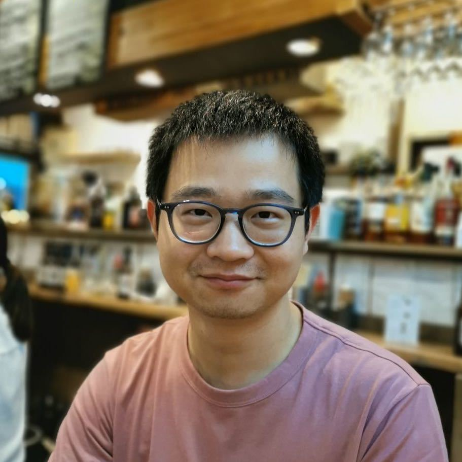

Junjie Jiao
|
 |
|
Short Bio
I am currently a Design Engineer (on product alignment) at ASML, The Netherlands. Before this, I was a Marie Curie Postdoctoral Fellow at the Chair of Information-Oriented Control (ITR), Technical University of Munich (TUM), Germany. From 2020 to 2022, I was a Postdoctoral researcher at the same Chair. In 2020, I obtained my Ph.D. degree in Applied Mathematics (Systems and Control) from the University of Groningen, The Netherlands.